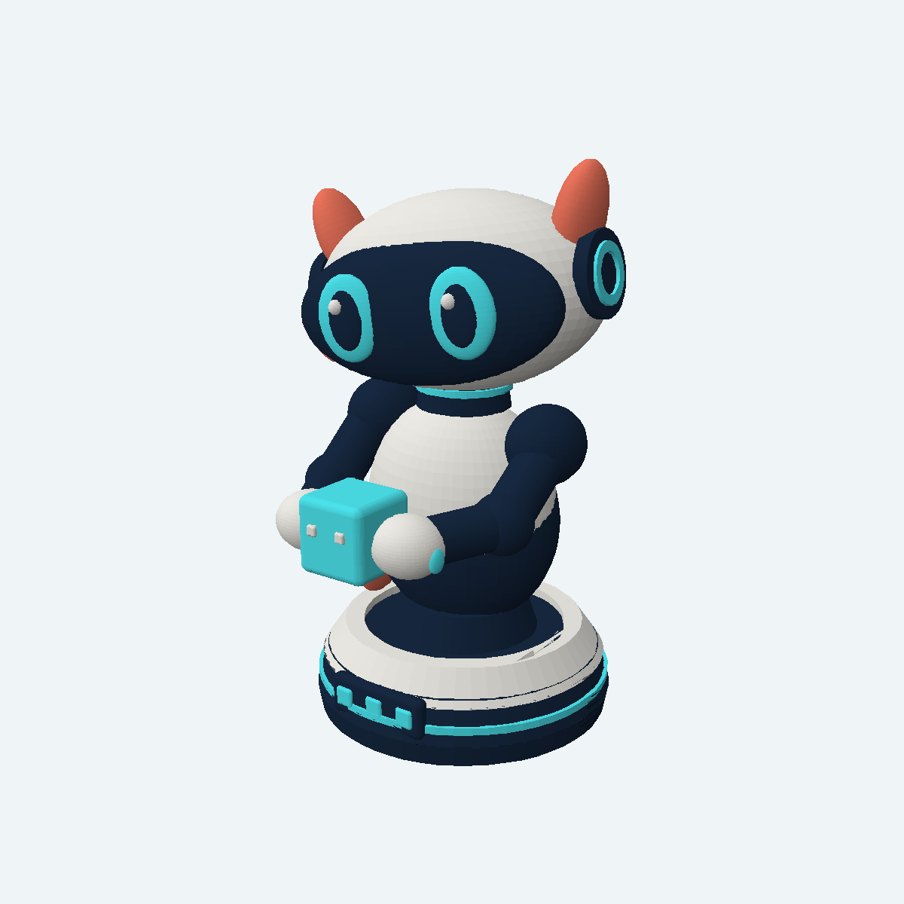
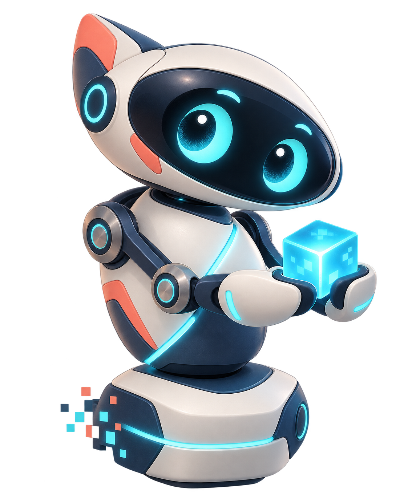
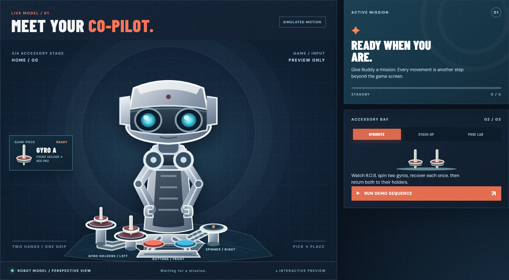
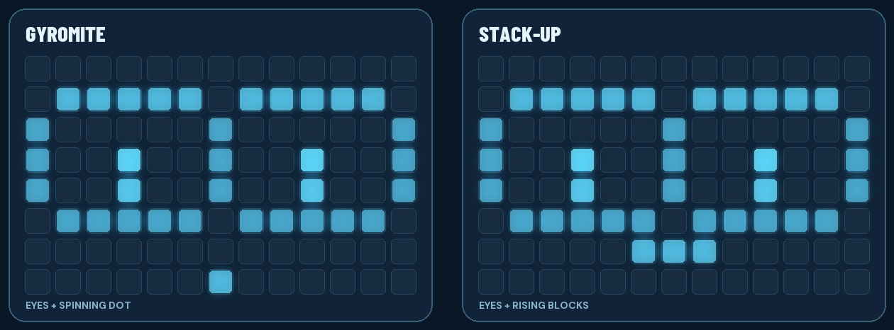
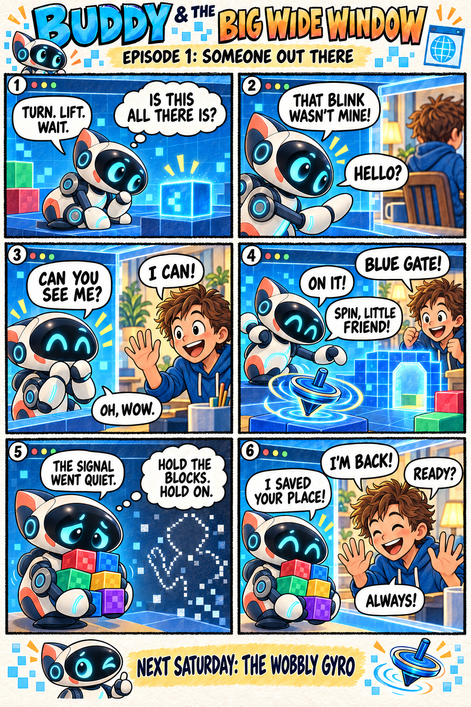
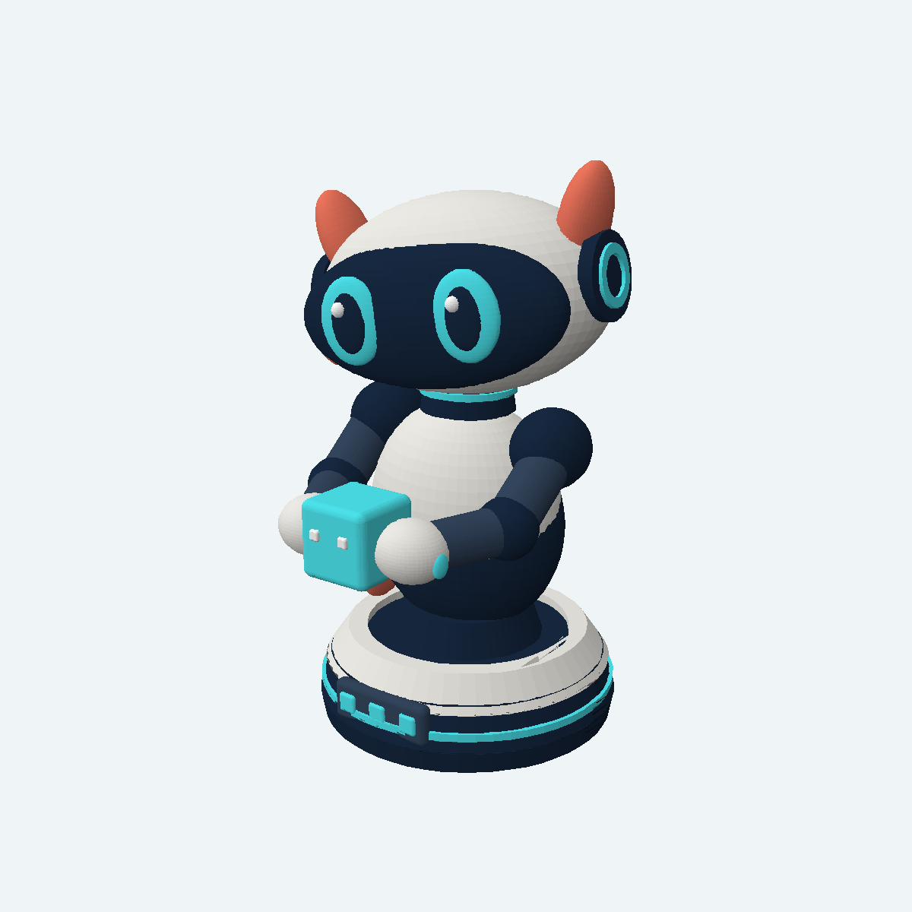

FOR FOUR FILAMENTS
FOUR COLOURS.
Ivory, deep navy, cyan, and coral orange. The small white details use ivory; the lighter navy details use deep navy.
Download 4-colour 3MF
THE CHARACTER BEHIND THE COMMANDS
Curious eyes. Careful hands. One very bright idea: there might be more to the world than the edge of a game frame.
A ROBOT WITH A STORY
Buddy lived in the dark between game frames. A flash told him to turn; another told him to lift. He could move the pieces, but the edge of the screen was as far as he had ever gone.
Then a little grid of lights appeared beyond the game. Buddy blinked back, and a larger window opened. For the first time, he could see his hands, the game table, and someone waiting for him to move.
Now every signal gives Buddy another step into the room. When the game ends, he waits for the next round.
Give Buddy a missionWATCH BUDDY PLAY
Mission is Buddy’s stage: watch him move, carry gyros or blocks, and respond to the game. His eyes bring a little personality to the UNO Q’s Matrix display.
Buddy turns, lifts, opens both hands, carries gyros or blocks, and places them on a virtual table. Follow his moves from a phone, tablet, or computer.

When Buddy is active, his eyes blink and look around on the tiny 13×8 Matrix. It’s a glimpse of his personality while his full adventure unfolds in your browser.

A SATURDAY MORNING ADVENTURE
Three full-page newspaper episodes follow Buddy from his first hello through a wobbly gyro and a five-block mystery.

BRING BUDDY INTO THE ROOM
Buddy is a 138 mm desk figure holding a game block. Choose the colour edition that fits your printer. Both 3MF files keep their colours as separate printable parts.

FOR FOUR FILAMENTS
Ivory, deep navy, cyan, and coral orange. The small white details use ivory; the lighter navy details use deep navy.
Download 4-colour 3MF
FOR SIX OR MORE FILAMENTS
Add lighter navy arms and crisp white eye and block details to the four main colours.
Download 6-colour 3MFPrint with the base flat on the bed and supports under the head, arms, and block. The files contain models, not printer settings; check the slice for your machine before printing.
ABOUT THE PROJECT
R.O.B. Vision is an open-source maker project. It uses Buddy, an original virtual companion, to make the games' light commands and accessories visible in a modern browser. It is inspired by the experience of playing with Nintendo's R.O.B.; it is independent and not affiliated with Nintendo.
A browser stage for Buddy, virtual models of Gyromite and Stack-Up, game links for RetroPie, Batocera, and Recalbox, and a small Matrix personality.
The source, technical reference, test results, and engineering history are available on GitHub. Bring your own game files; no ROMs are distributed with this project.